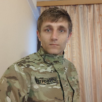

Я — Петро Скрипка, ветеран, колишній військовий та засновник благодійного фонду Петра Скрипки.

Після того як я був комісований зі служби за станом здоров’я, я не зупинився. Я організував піший благодійний марафон і пройшов від Києва до Нюрнберга (Німеччина), подолавши понад 2000 кілометрів через Україну, Польщу та Чехію.
Метою цього марафону був збір коштів на протезування поранених військових. Разом із небайдужими людьми нам вдалося зібрати 1,6 мільйона гривень, які були передані організації «Янголи Азову» для допомоги нашим захисникам.
Повернувшись додому, вже взимку я організував другий марафон — від Києва до Івано-Франківська, у ході якого було зібрано 950 тисяч гривень на автомобіль для моїх побратимів з 3-ї штурмової бригади.
Після цього почалися регулярні збори на РЕБи, автомобілі, дрони, медичне обладнання та іншу необхідну допомогу для різних підрозділів.
Так разом із командою ми заснували благодійний фонд і продовжуємо допомагати військовим та цивільним, які цього потребують.
Допомогти заразЗ перших днів війни я став на захист України. Сьогодні разом зі своєю командою ми продовжуємо допомагати тим, хто цього найбільше потребує.
Ми робимо це, тому що не можемо інакше. Коли ти бачиш біль людей — ти або проходиш повз, або допомагаєш.
Ви можете підтримати нашу діяльність: